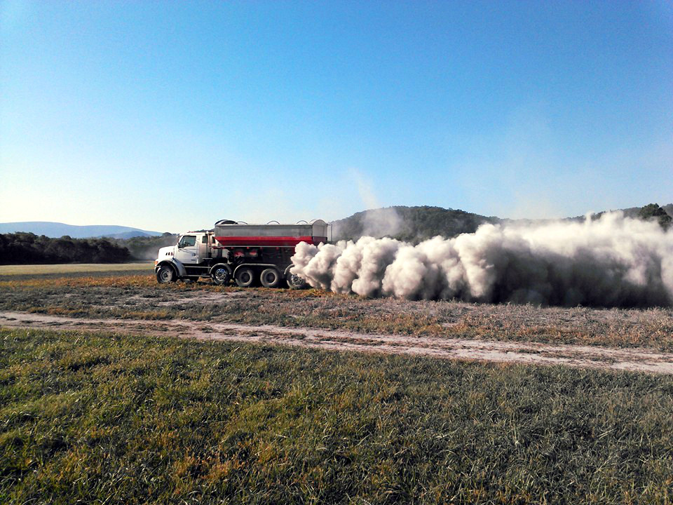

`
<div class="container">
  <div class="row">
    <div class="col s12 l8">

      <h3>Do I need Lime?</h3>
      <p>Lime makes your fertilizer dollars go farther, because the plants have less ability to make use of fertilizer if there’s a low soil pH. Lime raises soil pH.</p>


      <p>If you are unsure whether your field needs lime, soil sampling is the best way to find out. <a href="https://soiltest.vt.edu/sampling-insttructions.html" target="_blank">Virginia Tech Soil Testing Lab</a> offers free soil samples for commercial farmers, and charges a nominal fee for others.</p>

      You can pick up soil sample boxes and informational sheets at your local <a href="https://ext.vt.edu/offices.html" target="_blank">Virginia Cooperative Extension office</a>, or  . and

      <h5>Links</h5>
      <ul>
        <li> <a href="https://soiltest.vt.edu/sampling-insttructions.html" target="_blank">Sampling Instructions</a> </li>
        <li> <a href="http://pubs.ext.vt.edu/452/452-124/452-124.html" target="_blank">Soil Sample Information Sheet for Commercial Crop Production</a> </li>

        <li> <a href="https://pubs.ext.vt.edu/content/dam/pubs_ext_vt_edu/452/452-510/452-510_pdf.pdf" target="_blank">Lime Research</a> </li>

    </ul>
      <h5>Testing soil</h5>
      https://soiltest.vt.edu/fees-and-forms.html
      https://soiltest.vt.edu/sampling-insttructions.html


      <h5>How often do I need lime?</h5>
      <p>The frequency you'll need to apply lime depends on several factors including fertilizer, runoff and cropping intensity. The more crops or livestock are grown on a field, the more quickly it becomes acidic. </p>


      <h5>When to lime</h5>
      <p>Lime can be applied any time of year that the ground will support the heavy trucks. It can take 45-60 days for lime to correct the pH of a field, so ideally you. But the best time to  Avoid the busy season by calling us in the summer for hay and pasture land.</p>


    </div>
    <div class="col s12 l4">
      
    </div>
  </div>
</div>
